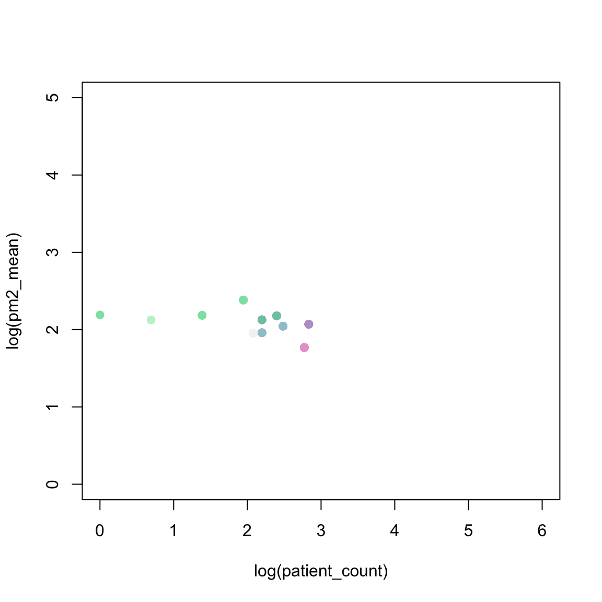
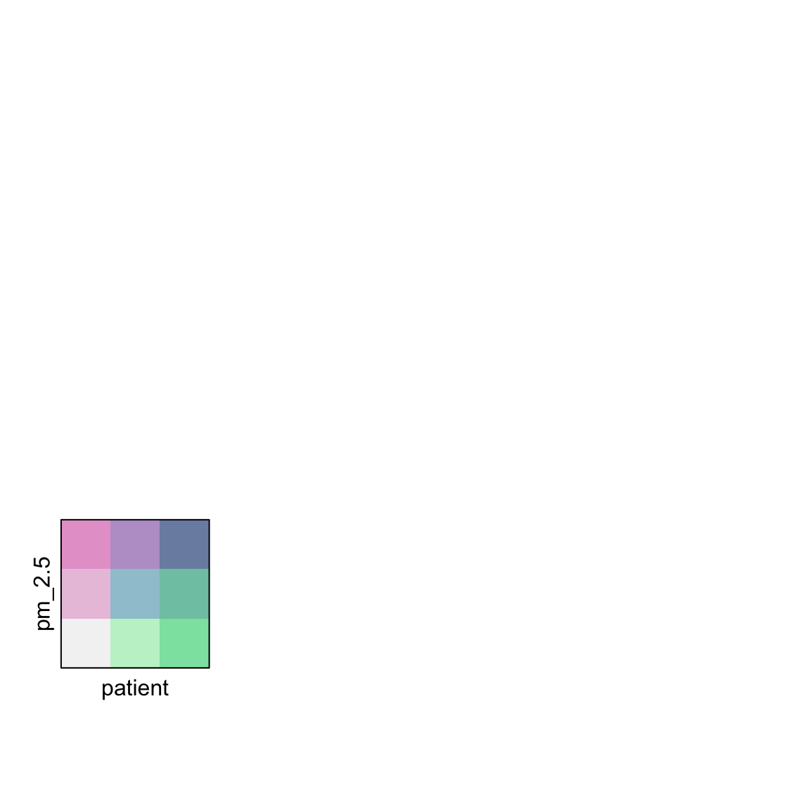

Bivariate maps
PM 2.5 Bivariate map
0.0.12 Set up bivariate color classes
Each variate is divided into thirds (based on percentiles) and a joint classification for all 9 combinations is defined.
require(latticeExtra) # USCancerRates, mapplot
require(maps) # map
require(classInt) # classIntervals, findCols
require(grid) # viewport, pushViewport
require(pals) # brewer.blues, stevens.pinkgreenFrom asthma_patients_pm_2_census_block_group_0.6.0_2010.csv run python biv_cho_map.py call fcc api to get county FIPS and Name for each patient https://geo.fcc.gov/api/census/#!/block/get_block_find new data fileasthma_patients_pm_2_census_block_group_0.6.0_2010.csv
library(readr)
df_county<-read.csv("./dataset/county.csv")
head(df_county)## X Unnamed..0 patientid lat lon
## 1 0 1 04a4d323-9115-49d8-b44f-f166c331c948 41.73322 -70.12610
## 2 1 2 cea474c2-e254-4004-9687-332aba93ad1f 42.71344 -70.83298
## 3 2 3 c3b51f04-41a8-4794-b195-02a9a6ace417 42.09928 -70.68884
## 4 3 4 03329b9a-1f93-45a9-b73f-50039543b544 42.32161 -70.92707
## 5 4 5 086a79cc-7ba9-4c18-ba01-7ee6085ae262 41.70227 -71.09501
## 6 5 6 43f4fccc-e592-48a4-a513-3b792f9d6220 42.43578 -71.06075
## start_date_time end_date_time birthdate gender code
## 1 2012-01-23 22:44:49 2012-01-23 22:44:49 1989-05-11 male 183478001
## 2 2012-05-15 20:33:03 2012-05-15 20:33:03 1965-02-05 male 183478001
## 3 2012-07-24 07:37:29 2012-07-24 07:37:29 1986-03-11 male 183478001
## 4 2012-03-14 08:10:33 2012-03-14 08:10:33 1977-03-13 male 183478001
## 5 2012-01-21 17:22:20 2012-01-21 17:22:20 1986-12-20 male 183478001
## 6 2012-05-17 21:10:17 2012-05-17 21:10:17 1983-04-28 male 183478001
## code_display start_date end_date date year
## 1 Emergency hospital admission for asthma 2012-01-23 2012-01-23 2012-01-23 2012
## 2 Emergency hospital admission for asthma 2012-05-15 2012-05-15 2012-05-15 2012
## 3 Emergency hospital admission for asthma 2012-07-24 2012-07-24 2012-07-24 2012
## 4 Emergency hospital admission for asthma 2012-03-14 2012-03-14 2012-03-14 2012
## 5 Emergency hospital admission for asthma 2012-01-21 2012-01-21 2012-01-21 2012
## 6 Emergency hospital admission for asthma 2012-05-17 2012-05-17 2012-05-17 2012
## h3 h3_3 pm_pred pm_se
## 1 882a310e69fffff 832a06fffffffff-832a31fffffffff 9.912325 1.858255
## 2 882a3001c9fffff 832a30fffffffff 10.397400 3.698060
## 3 882a315b1bfffff 832a06fffffffff-832a31fffffffff 9.668475 2.096010
## 4 882a30283dfffff 832a30fffffffff 7.458575 1.795863
## 5 882a33a143fffff 832a33fffffffff 7.068950 2.226050
## 6 882a3075c3fffff 832a30fffffffff 10.952550 2.895613
## census_block_group_id_2010 census_tract_id_2010 county_code county_name
## 1 250010108005 25001010800 25001 Barnstable County
## 2 250092231002 25009223100 25009 Essex County
## 3 250235062031 25023506203 25023 Plymouth County
## 4 250259801011 25025980101 25025 Suffolk County
## 5 250056425002 25005642500 25005 Bristol County
## 6 250173416003 25017341600 25017 Middlesex Countydf_census_block<-read.csv("./dataset/asthma_patients_pm_2_census_block_group_0.6.0_2010.csv")
head(df_census_block)## patientid lat lon start_date_time
## 1 aeeed2fd-b274-4947-b4c4-36e6f8d6fe48 42.03064 -71.49793 2011-04-02T11:32:13Z
## 2 2ff614fb-652d-4f83-89db-f66942a75dd4 42.27744 -71.82262 2010-12-30T02:39:26Z
## 3 7aad32c1-35f2-4522-9a16-08122504f981 42.58764 -72.52155 2010-11-06T04:36:07Z
## 4 f78662b4-ab83-43ae-bdbf-04668d4ba1c5 42.47049 -70.92015 2010-11-07T15:25:16Z
## 5 d9419f62-2212-47f6-9537-854289b1ccaa 42.34944 -73.26774 2011-03-30T16:39:36Z
## 6 ae0265e4-e679-46b7-ad5f-f6fb3a25072d 42.72983 -71.15126 2010-10-19T09:14:56Z
## end_date_time birthdate gender code
## 1 2011-04-02T11:32:13Z 1980-05-22 female 183478001
## 2 2010-12-30T02:39:26Z 1983-03-29 male 183478001
## 3 2010-11-06T04:36:07Z 2003-04-15 female 183478001
## 4 2010-11-07T15:25:16Z 1951-09-11 female 183478001
## 5 2011-03-30T16:39:36Z 1999-06-25 male 183478001
## 6 2010-10-19T09:14:56Z 1954-07-24 female 183478001
## code_display start_date end_date date year
## 1 Emergency hospital admission for asthma 2011-04-02 2011-04-02 2011-04-02 2011
## 2 Emergency hospital admission for asthma 2010-12-30 2010-12-30 2010-12-30 2010
## 3 Emergency hospital admission for asthma 2010-11-06 2010-11-06 2010-11-06 2010
## 4 Emergency hospital admission for asthma 2010-11-07 2010-11-07 2010-11-07 2010
## 5 Emergency hospital admission for asthma 2011-03-30 2011-03-30 2011-03-30 2011
## 6 Emergency hospital admission for asthma 2010-10-19 2010-10-19 2010-10-19 2010
## h3 h3_3 pm_pred pm_se census_block_group_id_2010
## 1 882a33c6b1fffff 832a33fffffffff 4.738200 0.8280494 250277471012
## 2 882a33d99dfffff 832a33fffffffff 20.799600 5.4792723 250277308012
## 3 882a320d31fffff 832a32fffffffff 3.553875 1.1884528 250110407022
## 4 882a3076cdfffff 832a30fffffffff 5.397100 1.4094668 250092021013
## 5 882a14da25fffff 832a14fffffffff 4.359900 1.0133038 250039131007
## 6 882a3046e9fffff 832a30fffffffff 8.406375 2.6272480 250092525022
## census_tract_id_2010
## 1 25027747101
## 2 25027730801
## 3 25011040702
## 4 25009202101
## 5 25003913100
## 6 250092525020.0.13 Get the boundaries for US MA counties
Aggregate the data by county, calculating the total number of patients and the mean pm2.5_pred:
df_agg <- df_county %>%
group_by(county_code) %>%
reframe(patient_count = n(),
county_name,
pm2_mean = mean(pm_pred, na.rm = TRUE))0.0.14 Join Census with Massachusetts map
dim(df_agg)## [1] 96 4ma_counties_data <- us_counties_MA %>% left_join(df_agg, by = c('NAMELSAD'='county_name'))
head(ma_counties_data)## Simple feature collection with 6 features and 15 fields
## Geometry type: MULTIPOLYGON
## Dimension: XY
## Bounding box: xmin: -72.31582 ymin: 42.00806 xmax: -71.47803 ymax: 42.72156
## Geodetic CRS: NAD83
## STATEFP COUNTYFP COUNTYNS AFFGEOID GEOID NAME NAMELSAD STUSPS
## 1 25 027 00606940 0500000US25027 25027 Worcester Worcester County MA
## 2 25 027 00606940 0500000US25027 25027 Worcester Worcester County MA
## 3 25 027 00606940 0500000US25027 25027 Worcester Worcester County MA
## 4 25 027 00606940 0500000US25027 25027 Worcester Worcester County MA
## 5 25 027 00606940 0500000US25027 25027 Worcester Worcester County MA
## 6 25 027 00606940 0500000US25027 25027 Worcester Worcester County MA
## STATE_NAME LSAD ALAND AWATER county_code patient_count pm2_mean
## 1 Massachusetts 06 3912627580 177366263 25027 16 5.862477
## 2 Massachusetts 06 3912627580 177366263 25027 16 5.862477
## 3 Massachusetts 06 3912627580 177366263 25027 16 5.862477
## 4 Massachusetts 06 3912627580 177366263 25027 16 5.862477
## 5 Massachusetts 06 3912627580 177366263 25027 16 5.862477
## 6 Massachusetts 06 3912627580 177366263 25027 16 5.862477
## geometry
## 1 MULTIPOLYGON (((-72.31363 4...
## 2 MULTIPOLYGON (((-72.31363 4...
## 3 MULTIPOLYGON (((-72.31363 4...
## 4 MULTIPOLYGON (((-72.31363 4...
## 5 MULTIPOLYGON (((-72.31363 4...
## 6 MULTIPOLYGON (((-72.31363 4... # ggplot() +
# geom_sf(data = ma_counties_data,
# aes(fill = patient_count),
# color = NA) +
# scale_fill_viridis() +
# theme_void() +
# theme(legend.position = "bottom") +
# labs(fill = "Patient count")0.0.15 Set color on both varaibles
cols <- stevens.pinkgreen; nbins <- 3
# categorize rates into 3 percentile bins
brks_pm <- classIntervals(log(ma_counties_data$pm2_mean), n=nbins, style='quantile')## Warning in classIntervals(log(ma_counties_data$pm2_mean), n = nbins, style = "quantile"):
## var has missing values, omitted in finding classesbrks_patient <- classIntervals(log(ma_counties_data$patient_count), n=nbins, style='quantile')## Warning in classIntervals(log(ma_counties_data$patient_count), n = nbins, : var has
## missing values, omitted in finding classesclass_pm <- findCols(brks_pm)
print(class_pm)## [1] 1 1 1 1 1 1 1 1 1 1 1 1 1 1 1 1 NA 3 3 3 3 3 3 3 3 3 3 3
## [29] 2 2 2 2 2 2 2 2 2 2 2 2 2 2 2 2 2 2 2 2 2 2 2 2 2 2 2 2
## [57] 2 2 2 2 2 2 2 2 2 2 3 3 3 3 3 3 3 3 3 3 3 3 3 3 3 3 NA 2
## [85] 2 3 3 3 3 1 1 1 1 1 1 1 1 NA 3class_patient <- findCols(brks_patient)
# convert x,y classes into a joint class x+3(y-1)
ma_counties_data$class2 <- class_pm + nbins*(class_patient-1)
# scatterplot of two variates showing bins
plot(log(pm2_mean) ~ log(patient_count), data=ma_counties_data,
col=cols()[ma_counties_data$class2], pch=19,
xlim=c(0, 6), ylim=c(0, 5))
0.0.16 Draw a state map with pm-patient
# Check for missing values
#sum(is.na(ma_counties_data))
# If there are missing values, you can drop or fill them as per your requirement
#df <- na.omit(ma_counties_data) # Drop rows with missing valuesm4 <- mapplot(rownames(ma_counties_data) ~ class2, data = ma_counties_data,
colramp=cols, breaks=seq(from=0.5, by=1, length=nbins*nbins+1),
xlab="",
colorkey=FALSE,
map = map("state","massachusetts", plot = FALSE, fill = TRUE,
projection = "tetra"),
scales = list(draw = FALSE))#print(nbins)
#matrix(1:(nbins*nbins), nrow=nbins)
m4leg <- levelplot(matrix(1:(nbins*nbins), nrow=nbins), axes=FALSE, col.regions=cols(),
xlab="patient", ylab="pm_2.5", cuts=8, colorkey=FALSE,
scales=list(draw=0))
vp <- viewport(x=.15, y=.25, width=.3, height=.3)
pushViewport(vp)
print(m4leg, newpage=FALSE)
popViewport()
#suppressWarnings(print( m4 ))
# table(apply(data_sample,1, paste,collapse=""))
#
m4leg <- levelplot(matrix(1:(nbins*nbins), nrow=nbins), axes=FALSE, col.regions=cols(),
xlab="patient", ylab="pm_2.5", cuts=8, colorkey=FALSE,
scales=list(draw=0))
# add the color legend
m4leg <- levelplot(matrix(1:(nbins*nbins), nrow=nbins), axes=FALSE, col.regions=cols(),
xlab="patient", ylab="pm_2.5", cuts=8, colorkey=FALSE,
scales=list(draw=0))
vp <- viewport(x=.15, y=.25, width=.3, height=.3)
pushViewport(vp)
print(m4leg, newpage=FALSE)
popViewport()